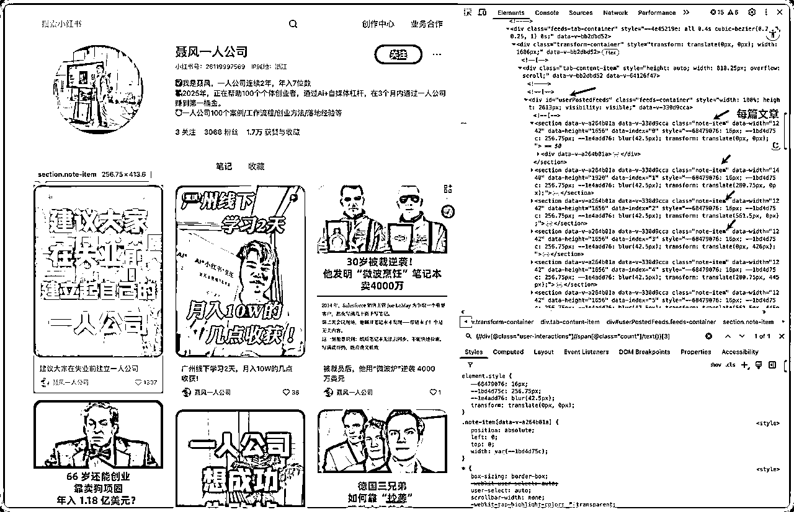
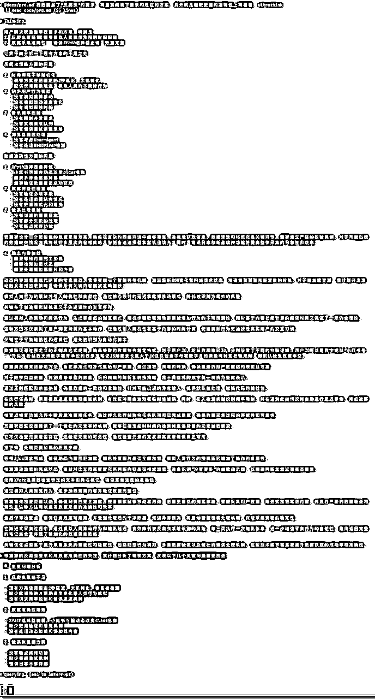
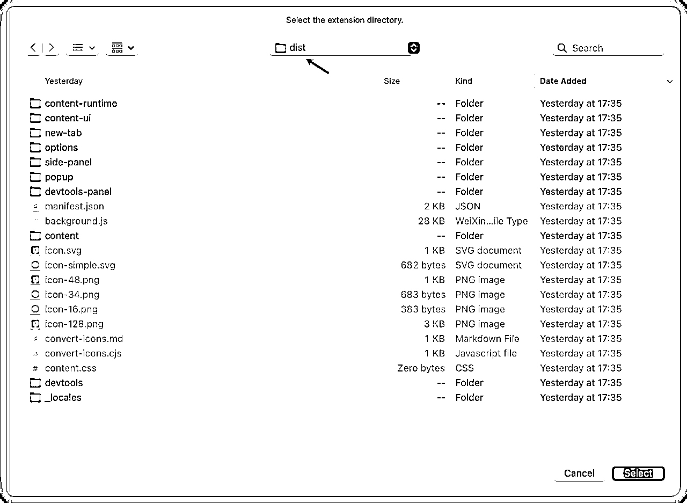
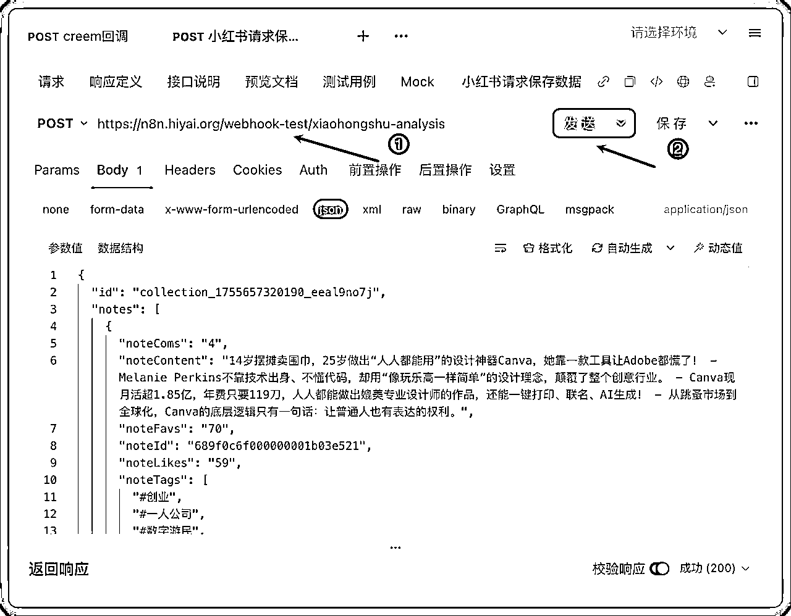
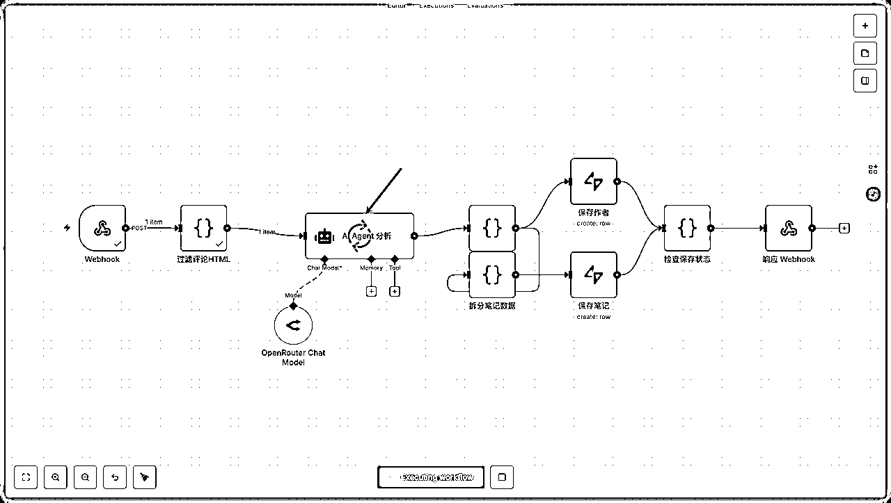
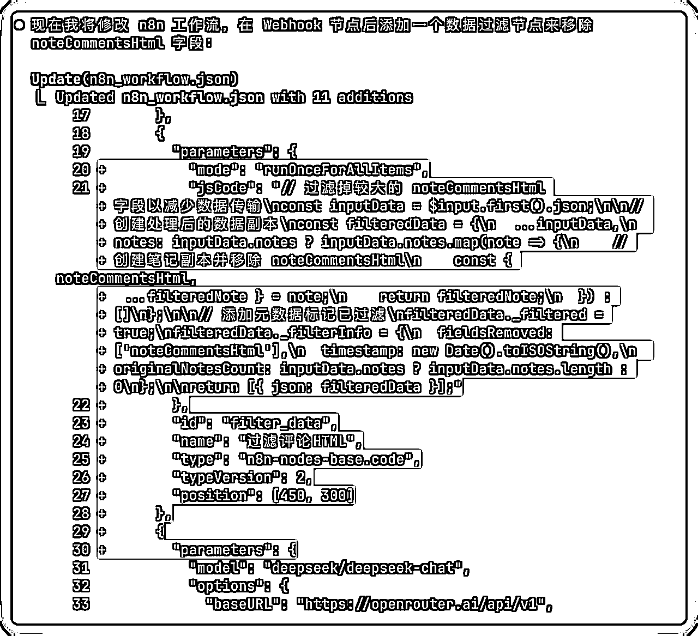
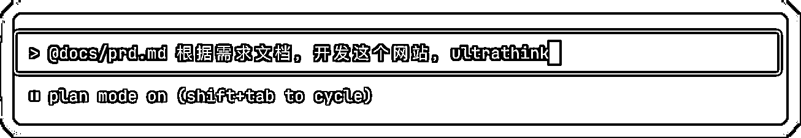
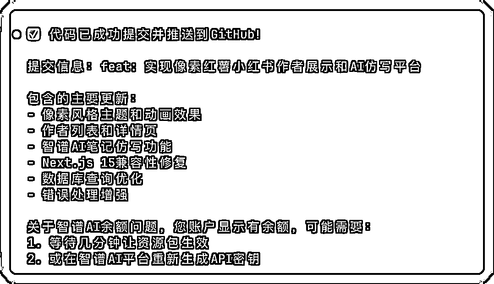
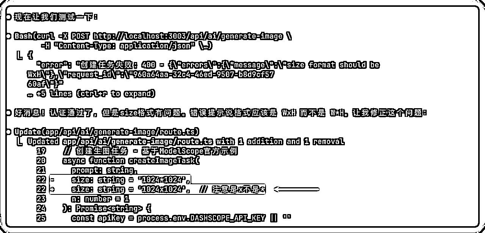

来源：https://sqm685cmohb.feishu.cn/docx/Ltiydw43JoFUyoxqfvycjWOvn17
大家好，我是志辉，10 年大数据架构，现专注 AI 编程。
我想在这条路上带领更多人实现自己的创意
也希望可以碰撞出更多的火花，带来未来无限的空间
这段时间一直在研究 claude code，我的工作项目、副业项目都和 claude code 分不开了。
使用 claude code 做了很多垃圾，也有些项目跑起来了。也在和大家积极探索 AI 编程的最佳范式。
智能体很火爆，之前我配置过一个推特采集然后写文章的过程，太痛苦。
那么我就想这两者能不能集合了？
果不其然，我尝试了下 claude code 去写 n8n 工作流。
结果。。。
我惊呆了，写的还挺准，比我人工配置的工作流好多了。
所以今天的这篇帖子就诞生了。
我相信后续 claude code 和 n8n 的结合，将产生更大的威力。
先来个视频爽快的体验下这个产品的魔力在哪里！
如果你想对标小红书的博主、自动发文、时刻关注博主消息等，那这个将给予你无限想象空间。
还有很多场景，都可以通过这个流程来实现。灵活+快速都可以做到
目前在这个里面可以做到什么了？
1、采集对标小红书博主们的所有文章以及个人信息，后续无限满足更多使用场景。
2、通过 n8n agent 自动工作流生成博主的报告信息，并将采集到的数据存储到数据库。
3、重塑小红书数据，任何形式展现操作。还可以模仿写文章和生成图片
其实就是三大块
1、小红书浏览器插件：是个爬虫采集工具，安装在浏览器上，可以自动采集博主的个人数据，包括昵称、ip 所在地、关注数、收藏/点赞数，还有每一篇文章的标题、描述、喜欢数、收藏数以及评论。
2、n8n agent 工作流：自动接收采集的数据，进行数据处理后，分别存储到不同的数据库表里，还会调用 AI 接口生成博主的专属报告
3、像素番薯系统（应用系统）：这个系统可以读取后端的数据，任意形式展现，这里我就做成像素风格了。并且可以对标生成文章，还加入了生图功能。
那么接下来就详细拆解下，这三个部分是如何完成的。
那还是先要普及下大家对这三个名词的认知，如果你已经知道了可以飘过直接进入下一个环节。
如果你还是不懂，不妨可以看看。
这个你不会还不知道吧，目前AI 编程界的扛把子，S 级的存在，至今我理解还无人能打。
Claude Code 已经成为我工作、生活中必不可少的编程工具。一方面是他的终端灵活，我可以在任何场景里面使用，另外一个就是我需要用很多语言和 IDE，可以很好的嵌入到的我的现有工作流里面。
另外就是他的 tools 的高效调用，让我对大型项目的修改也不在话下。
并且基于 claude 模型的文字能力，我还用于他辅助我写文章以及平时一些的工作总结报告等工作。
真是 Claude Code 一招工具走遍天下，打遍天下无敌手。
如果大家有玩智能体的都知道扣子平台了，以及dify这种可以玩开源自定义部署的工作流智能体。
那么 n8n 相当于他们的地方在哪里了？我的理解就是：自由度高，出海组件很丝滑。
比如我之前自动采集 x 的数据，然后根据我的写文风格，自动推送我需要的热点文章。
并且结合 Claude Code 的方式，上手难度降低很多。
靠着 Claude Code 的强大能力可以很好的完成 n8n 的工作流工作。
这个就是老生常谈的问题了。
这个其实还有些敏感的话题，这里面大家还是需要严格遵守网站的 robots.txt 的内容。
基本爬虫就是爬取页面上的元素，就是浏览器上可以显示源码查看到的 html 代码上的，要么就是后台接口获取的元素。
方式就有很多了：比如使用 rpa 技术，或者使用专门的爬虫工具。
另外就是专业点的编程方式：使用 xpath 表达式或者 css 选择器去定位元素
这里我选择的就是 xpath 表达式，为什么了？因为浏览器可以直接显示元素。这样我可以快速定位到元素。
//div[@class="user-name"]/text()
当然目前 AI 技术发展太快，采用以前自动化测试框架也可以进行爬虫的工作。
比如使用 playwright MCP 工具，也是可以找到元素进行爬取工作的。
好了，说到这里，也许很枯燥，不用看懂也没关系。
都是写基础知识的普及，后面觉得无聊（有时间）还可以再来看的。
下面就进入正题，开始我的实现之路。
先看下我的工作模式。
由于我要开发三个系统，所以我就直接采用终端的方式了。
直接在一个终端里面，开三个窗口。
这里很多小伙伴很好奇怎么开呀？
如果你是 mac 系统的话，很简单，基本所有的终端工具都支持，cmd+d：垂直分屏，cmd+shift+d：水平分屏
我用的终端工具：Ghostty，轻量，快捷，还不错。
如果你是 windows 系统的话：不太好搞，或者用 Warp 这种终端工具（我现在 mac 环境也用），不然就的多开终端窗口
如下图：
三箭齐发，我一个人同时控制三位牛马工作，还是很强悍的。
总算自己也当上了老板、监工。
这个时候不得不放这个图了，没错这就是我，哈哈哈。
123 已到齐，可以开始干活了。
结果一天的时间，用了 200+刀的费用，三位牛马给我蹬出了整个系统。
总结：全是 claude code 开发工作，我就提需求就行
要求：就是对
说明：我的 claude code 走官方订阅，200 刀套餐。
其他方式我也用：拼车/镜像/API 方式。
成年人就是全都要，小孩子才做选择。
那你说，我看了小红书采集的系统、工具那么多。
你这个有啥优势呀，没搞懂。
1、爬虫灵活：浏览器插件目前采用 xpath 表达式（效率和反爬的均衡），后续考虑接口方式。严格加入反爬机制。只做爬虫的事情
2、n8n 节点：生成 AI 报告，存储爬虫数据到数据库（supabase）。
3、系统：灵活展现小红书数据，模仿写文，还可以生图
一句话就是：每个工具做他该做的事情，
不吹牛了不吹牛了。
进入正题
第一部分：这部分就是浏览器插件开发
主要工作：
1、小红书爬取信息的 xpath 表达式的获取
2、开发浏览器插件
3、对接 n8n 的接口
开发的浏览器插件采用如下的模板代码：
为什么采用模板代码，避免让 claude code 自己采用格式，出现一些幻觉。
可以借用别人的项目工程的最佳实践。
地址：https://github.com/Jonghakseo/chrome-extension-boilerplate-react-vite
直接克隆到本地，并且重命名为 xiaohongshu-n8n-chrome-extension
git clone https://github.com/Jonghakseo/chrome-extension-boilerplate-react-vite xiaohongshu-n8n-chrome-extension
这其实很简单，就是claude code 的 init 命令的使用。
直接使用下面的提示词就可以。
/init 使用中文，ultrathink
等执行完成，就可以看到生成了 CLAUDE.md 文件
也贴一下文件的内容：
那么这里我们为什么要生成这个记忆文件了？
那么就是为了后续的开发工作可以顺利进行。
有了 CLAUDE.md 文件后，claude code 就可以很清晰知道这个项目是什么情况？
比如这个项目干嘛的？是个什么的架构模式？一些代码要写在哪里？
还有怎么执行这个项目？怎么打包？
执行完后就会一清二楚了。
要想知道 xpath 表达式，那么就先要知道 html 的知识。
这里就简单说下 html 的基础知识
大家可以跟 ai 一起学习知识，不懂的就可以问AI。
我们看到的网页页面的元素，基本都是 html 决定的，比如下面的代码。
文章标题
这是正文内容
点击查看更多
浏览器里面看到的是这样子的：
那么 xpath 是什么了？
XPath 是一种 路径语言，用来在 HTML 里定位节点，就像文件夹路径一样。
比如我要选择上面的「爬虫入门」「作者：小明」「2025-08-21」「/detail/123」怎么弄了。
我这里直接就揭晓答案了。
标题：//div[@class="article"]/h1/text() → 爬虫入门 作者：//p[@class="author"]/text() → 作者：小明 时间：//p[@class="time"]/text() → 2025-08-21 链接：//div[@class="article"]/a/@href → /detail/123
xpath 是个技能，学起来很简单，以前爬虫的日子 xpath 表达式的语法那是滚瓜烂熟了。
现在好久不搞，基本忘记了，不过我有 AI，不会的基本都问 GPT 了。
很简单，粘贴 html 代码，然后问某个值怎么获取，就获取到了 xpath 表达式。
那么 xpath 表达式有了后，怎么知道对不对了。
难道去写代码才行。No ! No ! No !
直接浏览器调试工具打开，定位到「Elements」标签页，直接搜索 xpath 表达式就行。
F12 就可以打开浏览器的调试工具了。
下图是上面举例的演示：
这个就是实际这个项目的小红书的采集的，博主的名称的举例：

包括美篇文章的举例：
以及使用 GPT 来获取这个xpath 表达式：
并且可以看到是有 16 个元素定位到。
xpath 表达式弄好后，就可以写需求文档了。
严格说是上面的 xpath 表达式我提前就写好了在需求文档里。
只不过我现在的需求文档需要重新整理下。以及一些功能的补充。
文档我也在这里贴出来吧，大家可以参考下：
然后 prd 的文档保存到项目目录下的 docs 目录下。
docs/prd.md
到这里就进入开发了。
直接进入 claude code，然后收入如下提示词就可以了。
记得这里使用的是 claude code 的 plan 模式。
shift + tab 两次即可进入。windows 有可能要使用 alt + m 切换
@docs/prd.md 这个是小红书数据采集的浏览器插件的详细需求，仔细阅读，并给出详细的规划方案，ultrathink
并且我把 claude code 给我的方案我保存成 markdown 文件里。
后面也可以进行方案的审核。
保存到@docs/目录下，文件名称格式是PLAN_20250819_001.md格式。
当我看了他的详细方案后，我觉得有些可能不太够。
那么就继续 PLAN 模式跟claude code 对话
@docs/prd.md 我后面加了“反爬虫“的要求，再重新阅读下需求和现在的方案，另外就是爬取数据的准确性上再看看，ultrathink

然后让claude code 更新文档
可以看到文档版本到了 2.0

付实施文档：
这里才到了真正开干的地方。
其实到这里，基本没啥可干预的。
如果前面的需求文档和实施文档聊的特别清楚后，这里就可以一路狂奔了。
我这里采用的就是狂飙模式。使用参数：--dangerously-skip-permissions
一路狂飙。
@docs/ 根据这个目录下的文档，开始写这个项目，ultrathink
这里说的还是使用plan 模式，生成计划后，就开始狂奔了。
所以狂奔的代价就来了。
当然这是正常的，你不狂奔，也很难保证一下子 claude code 给你写正确的。
问题的列举就是思路，提供大家结合问题的思路。
也许是个沉浸式体验我开发的过程，希望对大家有帮助。
开干环节可能没多少，但是这里问题的环节其实开发的重点。
一直在不停的跟 claude code 交互，让他解决问题。
比如：下面的问题
大家仔细看红字说的，并且还有个链接，应该是触发了 Anthropic 公司的使用策略。
我猜测爬虫/采集这些都是不能让 ai 去干活的。
那么解决方法很简单：你就让他换个别的方式达到你的目的，如果不好使的话，也没关系，后面多的是机会来解决这个问题。
所以在做这些工作的时候，尽量避免正面提爬虫/采集这些对于 Anthropic 的违禁词。
页面检测结果: {isValid: false, url: 'https://www.xiaohongshu.com/user/profile/68497faa0…7HFRUObas-vCl_PSLHKnTLshQwak=&xsec_source=pc_feed', userId: null, message: '请访问小红书个人主页（格式：https://www.xiaohongshu.com/user/profile/xxx）'}，页面已经检测倒是 https://www.xiaohongshu.com/user/profile/ 开头的格式，但是还是“页面不可采集“的术语，并且布局不太合理，[Image #1]

采集文章的数据，需要点击每个打开后才能采集到标题、正文这些元素的。ultrathink
中间又调整了很多策略
采集策略，先不滚动页面，等采集完用户数据后才开始采集文章数据，默认进来就会有一些文章，先采集已经在页面上的文章数据，需要有鼠标点击打开文章的操作，然后再采集文章的要素，比如标题、正文、评论等，ultrathink，补充信息，正常人点击的是 class="note-item" 下的class="cover" 的a标签
采集到的详细数据：
可以进行导出为 json 的数据
这里其实要到 n8n 的工作流配置后，才能到这个地步。
为了调试方便，我把前面的数据，使用了 APIFox 这个软件进行接口的调试。
https://apifox.com/
是一个 http 接口调试工具，对于小白来说可能太高深。
可以跟 AI 对话：http 是什么，接口是什么？我是个小白，帮我解释下，别人用APIFox 这个工具是干嘛的？

如果调试好接口后，可以拷贝代码，让 claude code 知道请求参数和响应体是什么样的。
避免接口参数对不上，调试麻烦。
当然也可以写好接口文档，因为这里只有一个接口，所以就直接粘贴到对话框提示词里面了。
同步n8n接口数据的参考代码为：{粘贴刚刚复制的 APIfox 代码}
返回数据格式：
{
"success": true,
"message": "✅ 数据保存成功",
"errors": [],
"details": {
"authorSaved": true,
"notesSaved": 114,
"totalProcessed": 115
},
"timestamp": "2025-08-20T09:30:24.997Z"
}
这里继续调试返回接口的数据格式：
这里主要是对采集数据的一个同步优化的提升功能。
[Image #1]，每次采集都会新增一个记录，我理解是不是只同步每次最新的那个就行，还是说每个采集的记录都可以有同步的按钮操作，深度思考下这个交互怎么好做。ultrathink
这里如下图，是个界面的布局问题。
其实这个问题修复了好久。搞了好几次。
[Image #1]，看这个布局，使用ascii复现给我画出来，我好确认你已经知道我的问题
这里的有个小技巧不是布局问题，可以让 claude code 可以用 ascii 图画出来。
一是确认claude code 理解了你的问题。
二是确认 Claude code 找到了解决办法。

没解决，就继续
加入 ultrathink
实际“采集数据“，“查看已采集数据“ 两个按钮还是太长，看是否可以做成自动适应父容器的，离父容器有个padding的距离。ultrathink
打开谷歌浏览器
一定要打开开发模式
然后就可以看见左边的三个按钮
选择目录。
一般是在项目目录下的 dist 目录。

浏览器插件记得置顶下，就可以看见了。
调试的方法：
如果要调试网络请求，可以切到 network 界面
到这里基本就完成了浏览器的工作开发
其实有很多确实要有一些基础知识，比如 xpath 表达式，还有 http 接口，F12调试窗口。
还有一种方法，你搞不定，你可以找个搞得定的人来帮你搞定。
到这里就更精彩了，可以说是全文的精华部分，也是最精彩的部分。
建议你倒好茶后，慢慢细品。
这里主要就是下面几个点
1、n8n 的工作都是 claude code 开发，我没有配置一个
2、接入 AI，生成个性化的博主的报告
3、数据都存储在数据库中（supabase）
因为数据要存储，所以需要建表工作。
这里可能又要难道小白了，因为涉及后端数据库的概念，还有表的语法。
不懂记得问 AI，如今时代学习能力我觉得是最需要的能力。
提示词如下：
主要就是把 json 的数据结构，文章的和博主的都需要粘贴到提示词里。
这样 claude code 可以很精准的推断出需要的表的建表语句。
{这里粘贴 json 的数据格式数据}
上面的数据是小红书的笔记和作者的数据，我希望有2个 supabase 的表来存储，分别是作者列表，以及笔记列表。
其他要求如下：
- 笔记列表就是保存对应的笔记数据，同时需要有一个作者id的字段能够联系起来。
- 作者表需要额外添加一个 report 字段
- 表不需要外键约束
- 暂时不需要 RLS 策略
请你给到我在supabase中创建这两个表的SQL语句，保存到 @supabase.sql 文件中
这里就是让 claude code 创建 sql 的建表语句。
@prd_ddl.md 根据文件中的描述，生成所需要的sql内容
创建了 sql 文件
supabase 执行 sql
这里有 supabase 的概念。
可以说就是云数据库，很方便集成了很多功能。
现在基本建站都会基于 supabase 来弄。
supabase 也是本地整个系统最要的组件之一。
相当于电脑的硬盘，存储着从小红书采集的数据。
后续我们的系统也会从这里读取数据。
所以是屯粮基地，不容许有失。
supabase 的使用很简单，注册完后。
创建一个项目就可以用了。
！！！重点！！！重点！！！重点！！！
它来了，它来了。
这里就是使用 claude code 开发 n8n 工作流的重点。两种方式
方式一：直接生成 n8n 的 json 配置文件
方式二：使用 n8n mcp 修改工作流配置。
废话少说，开干。
很简单：直接启动 mcp 服务
参考地址：https://github.com/czlonkowski/n8n-mcp
前提装好 nodejs 环境。
npx n8n-mcp
然后在项目的目录下新建 .mcp.json 文件，配置如下
{
"mcpServers": {
"n8n-mcp": {
"command": "npx",
"args": ["n8n-mcp"],
"env": {
"MCP_MODE": "stdio",
"LOG_LEVEL": "error",
"DISABLE_CONSOLE_OUTPUT": "true",
"N8N_API_URL": "你的n8n 地址",
"N8N_API_KEY": "你的 n8n key 配置"
}
}
}
}
N8N_API_URL：你的n8n 地址，类似：https://xxx.xxx.xxx/。也就是你访问 n8n 系统的地址。
N8N_API_KEY：你的 n8n key 配置。
进入到 n8n的设置页面，在「n8n API」菜单页面进行设置就可以。
其实这里 N8N_API_URL 和 N8N_API_KEY 的不设置，也可以写出json 的工作流文件。
这里配置就是为了
这里说下 n8n 的环境有很多种。
大多数的都是本地 docker 搭建的，这个大家可以看龙哥的文档，写的很详细。
我有云服务器，直接用的 zeabur 的模板，搭建在自己的 zeabur 管理的服务器上。很快就可以搞定环境。
又到了这个步骤，所以说现在的开发流程并没有减少，并且对个人的要求能力越来越高。
因为我发现，我现在代码写的越来越好，需求文档写的越来越多了。
主要就是的关键点：
1、写的是 n8n json 文件
2、使用 webhook 的触发方式
3、使用 ai 写博主的特殊报告
4、保存数据到数据库中
帮我编写一个n8n的agent的对应的json文件，这个agent的要求如下： 1. 能够以webhook的方式触发，POST请求，接受的数据的结构示例如下，这其实是一份小红书中获取到的创作者的相关数据，包含作者信息和笔记信息，@data.json 2. AI Agent接收到这个数据之后，能够根据数据中的信息，分析出这个用户的一些特征，并生成一个创作者的分析报告，报告要包含以下的主题：数据概览、赛道分析、标题风格分析、笔记风格分析、热门笔记分析。把分析的报告保存到`report`字段中 3. AI Agent分析完成后，需要解析对应的数据，并且分别把数据保存到对应的表中，分别有两个表，`xiaohongshu_authors` 表和 `xiaohongshu_notes` 表，分别对应作者列表和笔记列表，结构见文件 @supabase.sql 4. 2个数据保存成功后，能够返回一个true，如果保存失败，返回false 其他要求： 1. ChatModel 选择 OpenRouter，模型使用 deepseek 2. 报告应该体现专业性 3. AI Agent 的 prompt 要求能够完成我们上述的要求
当然需求文档也是借鉴了下别人的，感谢 yihui 大佬。
直接就艾特需求文档，让 claude code 开发了。
@prd_n8n.md 根据这个文档的需求，并使用 n8n-mcp 生成对应的n8n的配置json文件，ultrathink
注意：前期都是使用 plan 模式，并且我加上了 ultrathink。
得到执行计划
其实这里可以看到有每个节点
后续生成的时候，每个节点都会调用 n8n mcp 获取详细配置信息。
这样 claude code 就知道怎么生成这个节点的配置信息。
特别是需要处理数据的地方，就是用代码节点，而写代码是 claude code 的强项。
经过开发后就成功创建了 json 的配置文件
其实到这里，我还半信半疑，这个 json 文件能用吗？
那我们就试试不就知道了
直接新建一个 n8n 项目。
然后找到项目的右上角的三个点，选择导入文件。
选择我们刚刚生成的 json 文件就可以。
可以看到如下界面。当时我还是惊讶了下，我啥也没干，就是写了个需求文档。
这个导入后居然还是像模像样的。
目前足矣证明claude code + n8n 的方式是可行的。
不过有几个节点有些红色的叉，没关系，就是需要设置下对应 openrouter 和 supabase 的信息。
1、openrouter 的好填，直接填 API KEY 就行
2、supabase 的信息
第一个 host 的地方：
第二个：Service role secret
填好信息后就可以看见红色的❌消失了。
下一步就是测试了。
点击工作流下面的「Execute workflow」，就进入了测试模式。
可以看到整个工作流进入了测试模式，特别是第一个节点提示等待你的 url 请求。
点击第一个 webhook 的节点
就可以看到「Test URL」模式下的，一个 http 地址。
复制这个地址，我们使用前面提到的 ApiFOX 工具进行测试。

当 APIFox 的「发送」按钮操作后，就可以看见我们的工作流跑起来了。

可以看到运行过程中会有节点报错
我们点开具体的节点，就可以看到具体的错误信息：
可以看到是数据太多。
这类就要看之前浏览器插件采集到的数据。
前面我们采集了评论数据，但是没有做清理。这里为了处理方便，我门就先不处理这个评论数据。
接收到的数据里面有noteCommentsHtml评论数据，比较大，看是否可以先过滤掉，加一个过滤节点

这里还有个问题就是，数据库里面已经存储过的数据
再次执行的时候就会报错。
可以看到是唯一键冲突了。这个是数据库的特性。
这里我还是想处理下，也就是想让他支持 upsert 模式。
upsert 模式：就是没有数据就新增，有了数据就更新
唯一键：就比如身份证号，整个表里存储的数据每个人的记录有且仅有一条。没有这个身份证号的数据，就新增，有了，就更新这个条记录的数据。
所以这里想改成 upsert 模式，就是没有新增，有记录就更新
那这里我们采用的模式就是，直接更新工作流。
这个也是 n8n mcp 的工作流也支持的，调用了 n8n_update_partial_workflow 的方法。
我加入了 ultrathink 模式，让他深度思考，避免修复错误。
最后发现改了还是有错

继续修改：
并且我还装了 supabase 的 MCP 的好处就是可以看到可以查询 supbase 的文档。
确认 supbase 的 upsert 模式如何写。

最后其实使用了自定义的方式，也是 通过 supbase 的文档获取到可以执行。
并且通过 n8n mcp 知道 supbase 节点无法做到 upsert 操作。
最后 claude code 自动生成 http 节点，绑定 supabse 的auth信息，同时可以进行 supbase 的 upsert 操作。
修复完成！
就是保存了笔记数据，和博主的数据后，使用的是一套逻辑，那么判断就会出错。
比如判断了笔记数据 ok 后，博主的数据就判断异常，其实两部分的数据都是 ok 的。
继续问题排查
"检查保存状态"这个节点，因为检测的是“作者“和“笔记“的前置两
个节点，检测代码写的是通用的，运行的时候只会满足一个情况，
比如检测作者数据的时候，就会返回[
{
"success": false,
"message": "数据保存失败",
"errors": [
"笔记数据保存失败"
],
"authorSaved": true,
"notesSaved": 0,
"timestamp": "2025-08-20T09:00:42.892Z"
}
]，检查笔记数据的时候，就会返回[
{
"success": false,
"message": "数据保存失败",
"errors": [
"作者数据保存失败"
],
"authorSaved": false,
"notesSaved": 114,
"timestamp": "2025-08-20T09:00:42.934Z"
}
]，帮我重新想下这个方案如何设计好，ultrathink
让 claude code 给出方案：
解决问题：
其实到这里，你会发现，我并没有去 n8n 的界面配置任何工作流。
我也不知道这些节点是什么、是干嘛的，有哪些参数配置，通通不知道。
都是 claude code 生成后，我才去看这个节点是干嘛的。
这里总结核心的点：
1、对 claude code 说明白你的需求点，比如生成 n8n 的 json 文件
2、配置好 n8n mcp 工具，需要他获取真是的 n8n 节点文档配置数据
3、及时备份好工作流，直接就右上角三个点导出 json 文件就行。
这里其实更想说的就是学习能力以及和解决问题的能力。
这是我们在 AI 时代每个人都需要进行锻炼的能力。
偷偷告诉你，这里的模式是先难后易，这一部分是最简单的了。
终于到了第三阶段了。这里其实就可以松一口气了。
进入休闲时间，也是大家的都可以搞定的环节。
这个阶段的重点如下：
1、开发一个 web 系统，读取数据库的小红书数据，展示就行
2、模仿对标写文章，就是调用 AI 接口。
3、文生图，根据参数生成小红书配图，也是调用 AI 文生图接口即可。
最快的开发方式，还是基于模板代码去开发，基本环境一步到位。
直接使用 claude code 就进入业务需求开发。
直接使用模板代码生成项目
如果你不懂，没关系，这个模板里的代码我也没看过。
pnpm create next-app --example https://github.com/vercel/examples/tree/main/storage/postgres-drizzle
接下来填写下自己的项目名称就可以
xiaohongshu-n8n-web
其实重点就是理清你需要的功能。
以及具体的数据交互逻辑。
这里也感谢 yihui 大佬的提示词给到的灵感，还是很牛批的。
网站名称叫做：像素红薯。 网站功能如下： 1. 首页是从 xiaohongshu_authors 表中获取对应的数据，然后以卡片方式渲染，响应式一行最多渲染2个，移动端渲染1个卡片，点击作者名称能够新窗口打开链接 profile_url。同时卡片中有一个报告的icon，右侧出现报告渲染report 字段，report 字段为markdown格式，要求使用markdown的渲染库实现渲染。 2. 点击作者卡片后，能够进入到作者的详情页面，顶部显示 xiaohongshu_authors 中的相关数据，同时请求notes表的数据，获取对应 author_id 的笔记数据情况并渲染。同样是以卡片渲染。卡片展示所有文案，不要多行省略。 3.在作者详情页面需要有一个AI小红书笔记仿写的的功能，使用对应的icon，点击后能够弹出一个几乎全屏的弹框。左侧是配置页面，在配置页面用户能够配置是否添加emoji表情，有一个多行文本框，这个多行文本框允许用户输入主题和想要创作的内容，同时又一个【仿写】按钮，点击后请求后端接口，开始实现仿写功能。右侧是AI仿写的小红书笔记的生成区域，使用流式输出实现AI给出对应的笔记 4. AI功能使用智普大模型，使用OpenAI SDK，base_url:https://open.bigmodel.cn/api/paas/v4/, api_key为环境变量中的 ZAI_API_KEY，使用 process.env.ZAI_API_KEY。务必使用流式输出，模型使用：glm-4.5 5. 你需要编写对应的系统提示词和用户提示词，提示词中你还需要携带上改作者的notes这张表的数据，用于更好的参考原先的内容实现仿写 6. 网站使用 tailwindcss + shadcn/ui，要求UI样式魂斗罗的像素风格，有一定的微动画效果，颜色主要以🍠颜色为主题色。 7. xiaohongshu_authors 表和 xiaohongshu_notes 表结构见 @docs/supabase.sql，集成Drizzle ORM
这里重点说下，其实到这里我们看到了，这三部分的需求文档其实会很占用我们的时间。
1、想清楚你需要的功能，尽可能的详细，详细到有个 icon 都说清楚
2、用到的技术框架，也最好指定
3、使用的数据，指定表，以及交互组件
4、整体的网站风格。
5、指定好对应需要的 sql 文件和接口文档。
到这里还是一样的步骤，让 claude code 根据需求文档进行开发。
@docs/prd.md 根据需求文档，开发这个网站，ultrathink
还是依然在 plan 模式下，加入 ultrathink 深度思考。

开始执行计划
到这里放松下吧。

等待完成就可以了。
吃了点下午茶就准备收菜了
一进首页，目前看还不错哦。像素风，🍠的颜色，哈哈哈，一模一样的 icon。
但是。。。。就遇到了错误
直接复制页面上的复制按钮
粘贴到 CC 的对话界面中
就可以回车解决了。
解决后就可以看到个人的界面：
可以看到笔记列表为 0 的情况，那么直接告诉 claude cod 就可以。

可以看到根据 claude code 的描述，可能是关联字段搞错了。
最后也是可以顺利解决。还很亲切的给我们删除了调试日志。
最后仿写功能的时候，也会异常
我们粘贴异常信息，再加一点提示词。
仿写的时候报错：ai-rewrite-modal.tsx:90 生成失败: Error: 生成失败at handleGenerate (ai-rewrite-modal.tsx:55:15)
还有个小插曲。居然检测出我的 glm 账号的余额不足。
看了下我的账户余额不足。先充电吧，完成功能。
最后记得
commit push

效果如下：
这里借用的是 glm 的模型
这个在需求的文档里写的就很清楚了。
4. AI功能使用智普大模型，使用OpenAI SDK，base_url:https://open.bigmodel.cn/api/paas/v4/, api_key为环境变量中的 ZAI_API_KEY，使用 process.env.ZAI_API_KEY。务必使用流式输出，模型使用：glm-4.5
其实这里最好就是的就是把接口文档，保存到本地的 api-glm.md 文件中，这样 claude code 读取会更准确。
避免 claude code 可能读取不了链接的数据。
只用最近很火的 qwen 的生图模型
https://www.modelscope.cn/models/Qwen/Qwen-Image/summary
不过我尝试让claude code 讨论下这个模型怎么用
https://www.modelscope.cn/models/Qwen/Qwen-Image/summary 这个生图的模型怎么使用了？
不过后来开发我打算让 claude code 直接读取这个连接的文档
就是开发了后一直不对

没办法，就只能手动粘贴文档了。
我还特意粘贴上了文档中的示例代码（虽然是 python 的，但是 claude code 是可以理解的。）
@docs/api-modelscope.md 这个是modelscope的api文档，这个是文生图的示例代码：
这里有个问题就是需要绑定阿里巴巴的账号
其实刚开始我不知道，我就继续和claude code 聊错误。
它就会帮我排查接口，通过接口返回的信息给出我提示。
接下来继续测试接口
发现了尺寸的符号是 x 而不是*号的问题。

最后完美手工
这里就说了最后的一次的提交代码
基本上我做完一个小功能，或者解决基本问题后。我都会进行提交
养成提交代码的好习惯是整个过程所需要锻炼的。
commit push
到这里基本就完事了。这么样，感觉可否还行
按照管理还是来个总结吧。
AI智能体+AI 编程绝对是今年爆火的赛道。
那么体现来自于哪里了？
我觉得就是 claude code + n8n 的结合。
一个是编程界扛把子
一个是智能体的新星
加上出海的赛道爆火。
这就是 claude code + n8n 的魅力。
那么到底该怎么弄了
1、学好 AI 工具，用好 AI 工具，我这里就无脑推荐 Claude Code + n8n 了
跟 AI 一起学习或者找大佬一起学习。
2、找清楚你的需求痛点，弄明白你的需求文档，越细越好，一定要人工审核确认好。
3、干中学！干中学！干中学！
4、做个垃圾！做个垃圾！做个垃圾！
5、复盘！复盘！复盘！
原谅我重要的事情说三遍，其实就是这么简单。
增强你的学习能力以及问题处理能力
搞懂需求
剩下就是干就可以了。
如果你有遇到什么问题，都可以来找我，欢迎跟志辉一起交流讨论！
最后感谢生财！跟很多大佬一起学习，也在积极反哺大家，跟大家一起在这个时代打下属于自己的一片江山。